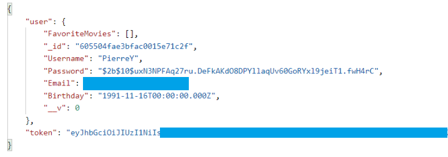

Case Study: Flix-For-Fun
Overview
This movie web application is built with the MERN stack. Users can create a profile to log in and receive access to a full list of movies in the database. They can use the filter bar feature to search through a list of movies by title and upon selecting the title, they can find related movie details including director or genre information. Users also have the option to favorite the movie, update their profile information or delete the account.
Purpose & context
Flix-For-Fun is a project I built where both the front-end and back-end was developed from scratch to demonstrate my coding skills and knowledge acquired from completing the CareerFoundry Full-Stack Web Development program.
Objective
I was striving to add a captivating project to my web porfolio and to completely grasp the process of building a fully fleshed-out web application. I wanted to familiarize myself with all the different tools and libraries being utilized and to recognize the areas that can be improved so that I could learn to make better architectural decisions in my future projects.
Approach
Back End
RESTful API was created utilizing Node.js and Express.js and interacts with a non-relational database (MongoDB). The API is accessed via the four HTTP request methods(GET, POST, PUT, DELETE). CRUD methods are used(CREATE, READ, UPDATE, DELETE) to retrieve from/store data to MongoDB. The API provides movie information in JSON format.
Postman was used to test the API endpoints. Authentication/authorization functionality was implemented in the backend in the form of basic HTTP authentication for login and JWT authentication for subsequent URL endpoint requests.
Front End
Once my backend API was completed, The front-end client side of the application was built to allow users to make requests to get information from the backend to render the webpage display(user interface). React was used to create the single-page application where different React components mount/unmount to change the UI. This way the application is quicker as all URL end points can be reached without needing to fetch more information from the backend pertaining to the request. The components that get rendered on the page includes a Login View, Registration View(automatically directs back to Login View once profile is created), Movie List View, Movie Page View(allows access to the selected movie's Director/Genre View page and a button to "add movie to Favorites List"), and Profile View(allows user to update profile information, remove movie from Favorites List, and delete user profile).
Challenges
The main challenges I faced in this project was first understanding how the react framework functioned. The other challenge was figuring out what problems Redux was created to solve - this helps determine whether it should or should not be used in a project. The amount of learning was tremendous in this project and I have become more proficient in building projects using this powerful technology (node/express/mongo for the back end and react/redux for the front end).
Duration
The overall project took approximately 4 weeks to build both the front and back end. This includes reading documentations, and making all necessary revisions after the initial submission. The revisions would improve code quality, include additional features, and cleaning web styling for better user experience.
Credits
Mentor - John Akhilomen
Tutor - Jason Early
Career Specialist - Neha Hurpaul